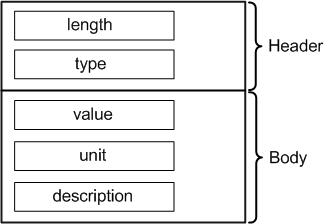

ValueResultAttrType
Contains the test result with the result value, unit, and a description. This attribute is used if the value is not associated with a pin. For example, the IDDQ test function logs the sum of all measured currents as a value result attribute.
The data type is DRLValueResultAttr.

Field Name |
Data Type |
Description |
Comments |
|---|---|---|---|
length |
int |
Attribute length |
These fields form the attribute header. |
type |
short |
Attribute type |
|
value |
double |
Value |
|
unit |
string |
Unit |
|
description |
string |
Description of the measurement, for example, that this is the result of a pre-test. |
|
Note You can specify any derived unit (such as ns or mA) for EDL data
logging. However, when data logs are converted to STDF, all units are converted to their SI
equivalents (ns to s, mA to A) and the corresponding values are converted accordingly. (For
example, 435 mA is converted to 0.435 A.)
Functional changes
- Introduced before SmarTest 6.3.2